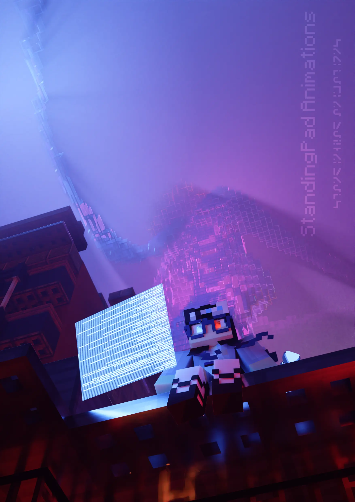
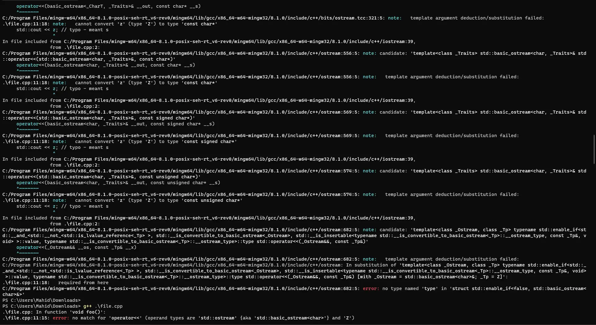
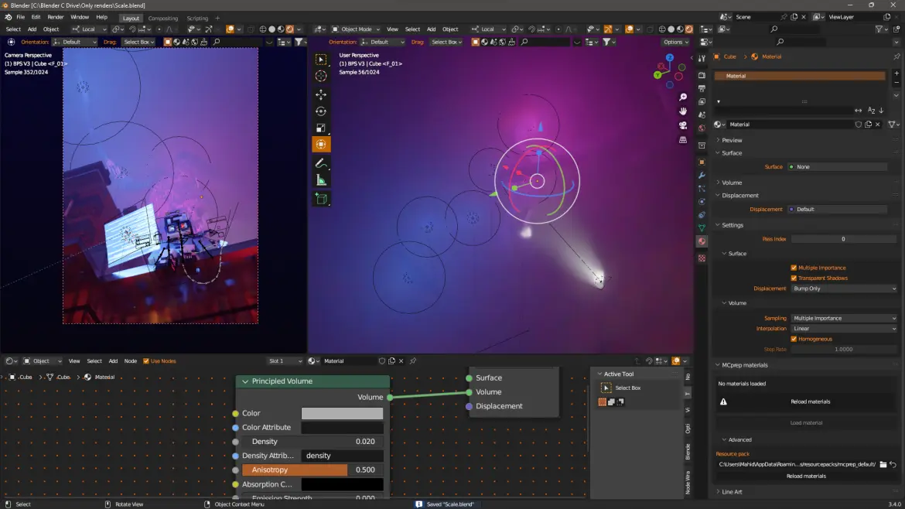
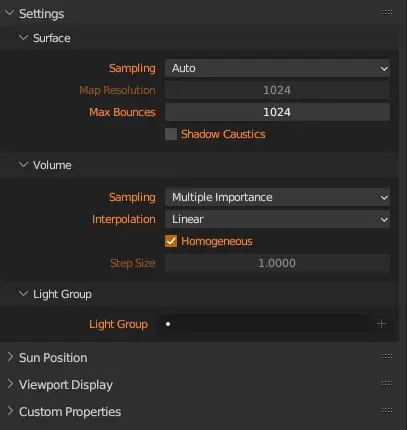
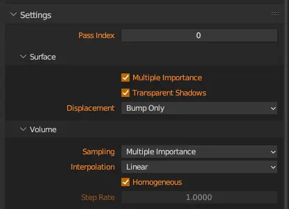
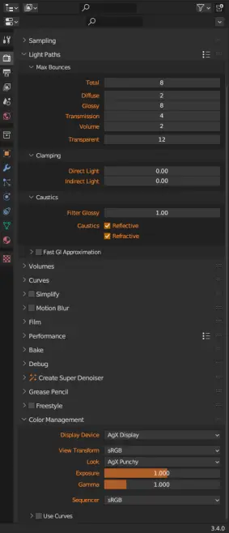
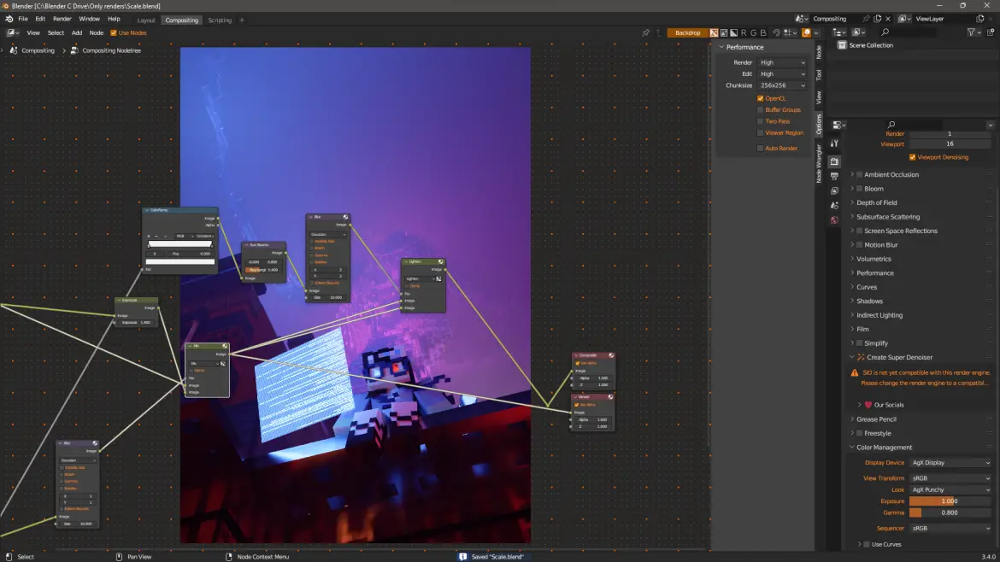
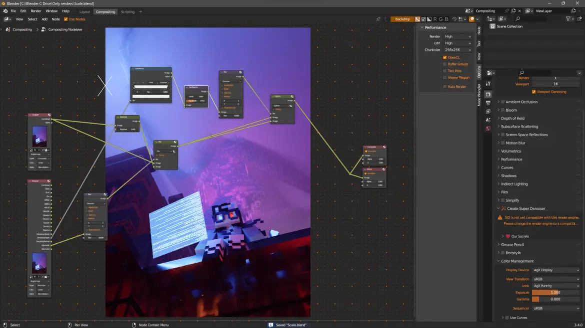

Edit September 29th, 2024: Ko-Fi supporters can download the blend file.
I recently had the motivation to make the following render
As you can see, there’s a lot of reflections, some long test, volumetrics, and other stuff. Since I don’t do much Minecraft rendering anymore, I think I’ll impart some insight into some of the more technial bits.
GCC’s Time to Shine #
“GCC?”
Basically, I needed to make a lot of text. Now, I could slam my keyboard a couple of times, but as a nerd I felt like it was the perfect oppertunity to use C++ to generate long text.
See, in the *NIX world (so MacOS and Linux), we have a compiler called GCC. GCC is infamous for generating horrific errors (I remember times where it would never stop printing). Since these errors are logged in the terminal (which made masking easy) and they were very technical, I decided to take advantage of those errors to make long text.
I yoinked the following code from StackOverFlow:
#include <string>
#include <iostream>
struct Z{};
void foo() {
std::string s;
Z z;
std::cout << z; // typo - meant s
}
and I put it through GCC, which printed the following error:
Long Error, Click to View
.\file.cpp: In function 'void foo()':
.\file.cpp:11:15: error: no match for 'operator<<' (operand types are 'std::ostream' {aka 'std::basic_ostream<char>'} and 'Z')
std::cout << z; // typo - meant s
~~~~~~~~~~^~~~
In file included from C:/Program Files/mingw-w64/x86_64-8.1.0-posix-seh-rt_v6-rev0/mingw64/lib/gcc/x86_64-w64-mingw32/8.1.0/include/c++/iostream:39,
from .\file.cpp:2:
C:/Program Files/mingw-w64/x86_64-8.1.0-posix-seh-rt_v6-rev0/mingw64/lib/gcc/x86_64-w64-mingw32/8.1.0/include/c++/ostream:108:7: note: candidate: 'std::basic_ostream<_CharT, _Traits>::__ostream_type& std::basic_ostream<_CharT, _Traits>::operator<<(std::basic_ostream<_CharT, _Traits>::__ostream_type& (*)(std::basic_ostream<_CharT, _Traits>::__ostream_type&)) [with _CharT = char; _Traits = std::char_traits<char>; std::basic_ostream<_CharT, _Traits>::__ostream_type = std::basic_ostream<char>]'
operator<<(__ostream_type& (*__pf)(__ostream_type&))
^~~~~~~~
C:/Program Files/mingw-w64/x86_64-8.1.0-posix-seh-rt_v6-rev0/mingw64/lib/gcc/x86_64-w64-mingw32/8.1.0/include/c++/ostream:108:7: note: no known conversion for argument 1 from 'Z' to 'std::basic_ostream<char>::__ostream_type& (*)(std::basic_ostream<char>::__ostream_type&)' {aka 'std::basic_ostream<char>& (*)(std::basic_ostream<char>&)'}
C:/Program Files/mingw-w64/x86_64-8.1.0-posix-seh-rt_v6-rev0/mingw64/lib/gcc/x86_64-w64-mingw32/8.1.0/include/c++/ostream:117:7: note: candidate: 'std::basic_ostream<_CharT, _Traits>::__ostream_type& std::basic_ostream<_CharT, _Traits>::operator<<(std::basic_ostream<_CharT, _Traits>::__ios_type& (*)(std::basic_ostream<_CharT, _Traits>::__ios_type&)) [with _CharT = char; _Traits = std::char_traits<char>; std::basic_ostream<_CharT, _Traits>::__ostream_type = std::basic_ostream<char>; std::basic_ostream<_CharT, _Traits>::__ios_type = std::basic_ios<char>]'
operator<<(__ios_type& (*__pf)(__ios_type&))
^~~~~~~~
C:/Program Files/mingw-w64/x86_64-8.1.0-posix-seh-rt_v6-rev0/mingw64/lib/gcc/x86_64-w64-mingw32/8.1.0/include/c++/ostream:117:7: note: no known conversion for argument 1 from 'Z' to 'std::basic_ostream<char>::__ios_type& (*)(std::basic_ostream<char>::__ios_type&)' {aka 'std::basic_ios<char>& (*)(std::basic_ios<char>&)'}
C:/Program Files/mingw-w64/x86_64-8.1.0-posix-seh-rt_v6-rev0/mingw64/lib/gcc/x86_64-w64-mingw32/8.1.0/include/c++/ostream:127:7: note: candidate: 'std::basic_ostream<_CharT, _Traits>::__ostream_type& std::basic_ostream<_CharT, _Traits>::operator<<(std::ios_base& (*)(std::ios_base&)) [with _CharT = char; _Traits = std::char_traits<char>; std::basic_ostream<_CharT, _Traits>::__ostream_type = std::basic_ostream<char>]'
operator<<(ios_base& (*__pf) (ios_base&))
^~~~~~~~
C:/Program Files/mingw-w64/x86_64-8.1.0-posix-seh-rt_v6-rev0/mingw64/lib/gcc/x86_64-w64-mingw32/8.1.0/include/c++/ostream:127:7: note: no known conversion for argument 1 from 'Z' to 'std::ios_base& (*)(std::ios_base&)'
C:/Program Files/mingw-w64/x86_64-8.1.0-posix-seh-rt_v6-rev0/mingw64/lib/gcc/x86_64-w64-mingw32/8.1.0/include/c++/ostream:166:7: note: candidate: 'std::basic_ostream<_CharT, _Traits>::__ostream_type& std::basic_ostream<_CharT, _Traits>::operator<<(long int) [with _CharT = char; _Traits = std::char_traits<char>; std::basic_ostream<_CharT, _Traits>::__ostream_type = std::basic_ostream<char>]'
operator<<(long __n)
^~~~~~~~
C:/Program Files/mingw-w64/x86_64-8.1.0-posix-seh-rt_v6-rev0/mingw64/lib/gcc/x86_64-w64-mingw32/8.1.0/include/c++/ostream:166:7: note: no known conversion for argument 1 from 'Z' to 'long int'
C:/Program Files/mingw-w64/x86_64-8.1.0-posix-seh-rt_v6-rev0/mingw64/lib/gcc/x86_64-w64-mingw32/8.1.0/include/c++/ostream:170:7: note: candidate: 'std::basic_ostream<_CharT, _Traits>::__ostream_type& std::basic_ostream<_CharT, _Traits>::operator<<(long unsigned int) [with _CharT = char; _Traits = std::char_traits<char>; std::basic_ostream<_CharT, _Traits>::__ostream_type = std::basic_ostream<char>]'
operator<<(unsigned long __n)
^~~~~~~~
C:/Program Files/mingw-w64/x86_64-8.1.0-posix-seh-rt_v6-rev0/mingw64/lib/gcc/x86_64-w64-mingw32/8.1.0/include/c++/ostream:170:7: note: no known conversion for argument 1 from 'Z' to 'long unsigned int'
C:/Program Files/mingw-w64/x86_64-8.1.0-posix-seh-rt_v6-rev0/mingw64/lib/gcc/x86_64-w64-mingw32/8.1.0/include/c++/ostream:174:7: note: candidate: 'std::basic_ostream<_CharT, _Traits>::__ostream_type& std::basic_ostream<_CharT, _Traits>::operator<<(bool) [with _CharT = char; _Traits = std::char_traits<char>; std::basic_ostream<_CharT, _Traits>::__ostream_type = std::basic_ostream<char>]'
operator<<(bool __n)
^~~~~~~~
C:/Program Files/mingw-w64/x86_64-8.1.0-posix-seh-rt_v6-rev0/mingw64/lib/gcc/x86_64-w64-mingw32/8.1.0/include/c++/ostream:174:7: note: no known conversion for argument 1 from 'Z' to 'bool'
In file included from C:/Program Files/mingw-w64/x86_64-8.1.0-posix-seh-rt_v6-rev0/mingw64/lib/gcc/x86_64-w64-mingw32/8.1.0/include/c++/ostream:693,
from C:/Program Files/mingw-w64/x86_64-8.1.0-posix-seh-rt_v6-rev0/mingw64/lib/gcc/x86_64-w64-mingw32/8.1.0/include/c++/iostream:39,
from .\file.cpp:2:
C:/Program Files/mingw-w64/x86_64-8.1.0-posix-seh-rt_v6-rev0/mingw64/lib/gcc/x86_64-w64-mingw32/8.1.0/include/c++/bits/ostream.tcc:91:5: note: candidate: 'std::basic_ostream<_CharT, _Traits>& std::basic_ostream<_CharT, _Traits>::operator<<(short int) [with _CharT = char; _Traits = std::char_traits<char>]'
basic_ostream<_CharT, _Traits>::
^~~~~~~~~~~~~~~~~~~~~~~~~~~~~~
C:/Program Files/mingw-w64/x86_64-8.1.0-posix-seh-rt_v6-rev0/mingw64/lib/gcc/x86_64-w64-mingw32/8.1.0/include/c++/bits/ostream.tcc:91:5: note: no known conversion for argument 1 from 'Z' to 'short int'
In file included from C:/Program Files/mingw-w64/x86_64-8.1.0-posix-seh-rt_v6-rev0/mingw64/lib/gcc/x86_64-w64-mingw32/8.1.0/include/c++/iostream:39,
from .\file.cpp:2:
C:/Program Files/mingw-w64/x86_64-8.1.0-posix-seh-rt_v6-rev0/mingw64/lib/gcc/x86_64-w64-mingw32/8.1.0/include/c++/ostream:181:7: note: candidate: 'std::basic_ostream<_CharT, _Traits>::__ostream_type& std::basic_ostream<_CharT, _Traits>::operator<<(short unsigned int) [with _CharT = char; _Traits = std::char_traits<char>; std::basic_ostream<_CharT, _Traits>::__ostream_type = std::basic_ostream<char>]'
operator<<(unsigned short __n)
^~~~~~~~
C:/Program Files/mingw-w64/x86_64-8.1.0-posix-seh-rt_v6-rev0/mingw64/lib/gcc/x86_64-w64-mingw32/8.1.0/include/c++/ostream:181:7: note: no known conversion for argument 1 from 'Z' to 'short unsigned int'
In file included from C:/Program Files/mingw-w64/x86_64-8.1.0-posix-seh-rt_v6-rev0/mingw64/lib/gcc/x86_64-w64-mingw32/8.1.0/include/c++/ostream:693,
from C:/Program Files/mingw-w64/x86_64-8.1.0-posix-seh-rt_v6-rev0/mingw64/lib/gcc/x86_64-w64-mingw32/8.1.0/include/c++/iostream:39,
from .\file.cpp:2:
C:/Program Files/mingw-w64/x86_64-8.1.0-posix-seh-rt_v6-rev0/mingw64/lib/gcc/x86_64-w64-mingw32/8.1.0/include/c++/bits/ostream.tcc:105:5: note: candidate: 'std::basic_ostream<_CharT, _Traits>& std::basic_ostream<_CharT, _Traits>::operator<<(int) [with _CharT = char; _Traits = std::char_traits<char>]'
basic_ostream<_CharT, _Traits>::
^~~~~~~~~~~~~~~~~~~~~~~~~~~~~~
C:/Program Files/mingw-w64/x86_64-8.1.0-posix-seh-rt_v6-rev0/mingw64/lib/gcc/x86_64-w64-mingw32/8.1.0/include/c++/bits/ostream.tcc:105:5: note: no known conversion for argument 1 from 'Z' to 'int'
In file included from C:/Program Files/mingw-w64/x86_64-8.1.0-posix-seh-rt_v6-rev0/mingw64/lib/gcc/x86_64-w64-mingw32/8.1.0/include/c++/iostream:39,
from .\file.cpp:2:
C:/Program Files/mingw-w64/x86_64-8.1.0-posix-seh-rt_v6-rev0/mingw64/lib/gcc/x86_64-w64-mingw32/8.1.0/include/c++/ostream:192:7: note: candidate: 'std::basic_ostream<_CharT, _Traits>::__ostream_type& std::basic_ostream<_CharT, _Traits>::operator<<(unsigned int) [with _CharT = char; _Traits = std::char_traits<char>; std::basic_ostream<_CharT, _Traits>::__ostream_type = std::basic_ostream<char>]'
operator<<(unsigned int __n)
^~~~~~~~
C:/Program Files/mingw-w64/x86_64-8.1.0-posix-seh-rt_v6-rev0/mingw64/lib/gcc/x86_64-w64-mingw32/8.1.0/include/c++/ostream:192:7: note: no known conversion for argument 1 from 'Z' to 'unsigned int'
C:/Program Files/mingw-w64/x86_64-8.1.0-posix-seh-rt_v6-rev0/mingw64/lib/gcc/x86_64-w64-mingw32/8.1.0/include/c++/ostream:201:7: note: candidate: 'std::basic_ostream<_CharT, _Traits>::__ostream_type& std::basic_ostream<_CharT, _Traits>::operator<<(long long int) [with _CharT = char; _Traits = std::char_traits<char>; std::basic_ostream<_CharT, _Traits>::__ostream_type = std::basic_ostream<char>]'
operator<<(long long __n)
^~~~~~~~
C:/Program Files/mingw-w64/x86_64-8.1.0-posix-seh-rt_v6-rev0/mingw64/lib/gcc/x86_64-w64-mingw32/8.1.0/include/c++/ostream:201:7: note: no known conversion for argument 1 from 'Z' to 'long long int'
C:/Program Files/mingw-w64/x86_64-8.1.0-posix-seh-rt_v6-rev0/mingw64/lib/gcc/x86_64-w64-mingw32/8.1.0/include/c++/ostream:205:7: note: candidate: 'std::basic_ostream<_CharT, _Traits>::__ostream_type& std::basic_ostream<_CharT, _Traits>::operator<<(long long unsigned int) [with _CharT = char; _Traits = std::char_traits<char>; std::basic_ostream<_CharT, _Traits>::__ostream_type = std::basic_ostream<char>]'
operator<<(unsigned long long __n)
^~~~~~~~
C:/Program Files/mingw-w64/x86_64-8.1.0-posix-seh-rt_v6-rev0/mingw64/lib/gcc/x86_64-w64-mingw32/8.1.0/include/c++/ostream:205:7: note: no known conversion for argument 1 from 'Z' to 'long long unsigned int'
C:/Program Files/mingw-w64/x86_64-8.1.0-posix-seh-rt_v6-rev0/mingw64/lib/gcc/x86_64-w64-mingw32/8.1.0/include/c++/ostream:220:7: note: candidate: 'std::basic_ostream<_CharT, _Traits>::__ostream_type& std::basic_ostream<_CharT, _Traits>::operator<<(double) [with _CharT = char; _Traits = std::char_traits<char>; std::basic_ostream<_CharT, _Traits>::__ostream_type = std::basic_ostream<char>]'
operator<<(double __f)
^~~~~~~~
C:/Program Files/mingw-w64/x86_64-8.1.0-posix-seh-rt_v6-rev0/mingw64/lib/gcc/x86_64-w64-mingw32/8.1.0/include/c++/ostream:220:7: note: no known conversion for argument 1 from 'Z' to 'double'
C:/Program Files/mingw-w64/x86_64-8.1.0-posix-seh-rt_v6-rev0/mingw64/lib/gcc/x86_64-w64-mingw32/8.1.0/include/c++/ostream:224:7: note: candidate: 'std::basic_ostream<_CharT, _Traits>::__ostream_type& std::basic_ostream<_CharT, _Traits>::operator<<(float) [with _CharT = char; _Traits = std::char_traits<char>; std::basic_ostream<_CharT, _Traits>::__ostream_type = std::basic_ostream<char>]'
operator<<(float __f)
^~~~~~~~
C:/Program Files/mingw-w64/x86_64-8.1.0-posix-seh-rt_v6-rev0/mingw64/lib/gcc/x86_64-w64-mingw32/8.1.0/include/c++/ostream:224:7: note: no known conversion for argument 1 from 'Z' to 'float'
C:/Program Files/mingw-w64/x86_64-8.1.0-posix-seh-rt_v6-rev0/mingw64/lib/gcc/x86_64-w64-mingw32/8.1.0/include/c++/ostream:232:7: note: candidate: 'std::basic_ostream<_CharT, _Traits>::__ostream_type& std::basic_ostream<_CharT, _Traits>::operator<<(long double) [with _CharT = char; _Traits = std::char_traits<char>; std::basic_ostream<_CharT, _Traits>::__ostream_type = std::basic_ostream<char>]'
operator<<(long double __f)
^~~~~~~~
C:/Program Files/mingw-w64/x86_64-8.1.0-posix-seh-rt_v6-rev0/mingw64/lib/gcc/x86_64-w64-mingw32/8.1.0/include/c++/ostream:232:7: note: no known conversion for argument 1 from 'Z' to 'long double'
C:/Program Files/mingw-w64/x86_64-8.1.0-posix-seh-rt_v6-rev0/mingw64/lib/gcc/x86_64-w64-mingw32/8.1.0/include/c++/ostream:245:7: note: candidate: 'std::basic_ostream<_CharT, _Traits>::__ostream_type& std::basic_ostream<_CharT, _Traits>::operator<<(const void*) [with _CharT = char; _Traits = std::char_traits<char>; std::basic_ostream<_CharT, _Traits>::__ostream_type = std::basic_ostream<char>]'
operator<<(const void* __p)
^~~~~~~~
C:/Program Files/mingw-w64/x86_64-8.1.0-posix-seh-rt_v6-rev0/mingw64/lib/gcc/x86_64-w64-mingw32/8.1.0/include/c++/ostream:245:7: note: no known conversion for argument 1 from 'Z' to 'const void*'
In file included from C:/Program Files/mingw-w64/x86_64-8.1.0-posix-seh-rt_v6-rev0/mingw64/lib/gcc/x86_64-w64-mingw32/8.1.0/include/c++/ostream:693,
from C:/Program Files/mingw-w64/x86_64-8.1.0-posix-seh-rt_v6-rev0/mingw64/lib/gcc/x86_64-w64-mingw32/8.1.0/include/c++/iostream:39,
from .\file.cpp:2:
C:/Program Files/mingw-w64/x86_64-8.1.0-posix-seh-rt_v6-rev0/mingw64/lib/gcc/x86_64-w64-mingw32/8.1.0/include/c++/bits/ostream.tcc:119:5: note: candidate: 'std::basic_ostream<_CharT, _Traits>& std::basic_ostream<_CharT, _Traits>::operator<<(std::basic_ostream<_CharT, _Traits>::__streambuf_type*) [with _CharT = char; _Traits = std::char_traits<char>; std::basic_ostream<_CharT, _Traits>::__streambuf_type = std::basic_streambuf<char>]'
basic_ostream<_CharT, _Traits>::
^~~~~~~~~~~~~~~~~~~~~~~~~~~~~~
C:/Program Files/mingw-w64/x86_64-8.1.0-posix-seh-rt_v6-rev0/mingw64/lib/gcc/x86_64-w64-mingw32/8.1.0/include/c++/bits/ostream.tcc:119:5: note: no known conversion for argument 1 from 'Z' to 'std::basic_ostream<char>::__streambuf_type*' {aka 'std::basic_streambuf<char>*'}
In file included from C:/Program Files/mingw-w64/x86_64-8.1.0-posix-seh-rt_v6-rev0/mingw64/lib/gcc/x86_64-w64-mingw32/8.1.0/include/c++/string:52,
from .\file.cpp:1:
C:/Program Files/mingw-w64/x86_64-8.1.0-posix-seh-rt_v6-rev0/mingw64/lib/gcc/x86_64-w64-mingw32/8.1.0/include/c++/bits/basic_string.h:6284:5: note: candidate: 'template<class _CharT, class _Traits, class _Alloc> std::basic_ostream<_CharT, _Traits>& std::operator<<(std::basic_ostream<_CharT, _Traits>&, const std::__cxx11::basic_string<_CharT, _Traits, _Alloc>&)'
operator<<(basic_ostream<_CharT, _Traits>& __os,
^~~~~~~~
C:/Program Files/mingw-w64/x86_64-8.1.0-posix-seh-rt_v6-rev0/mingw64/lib/gcc/x86_64-w64-mingw32/8.1.0/include/c++/bits/basic_string.h:6284:5: note: template argument deduction/substitution failed:
.\file.cpp:11:18: note: 'Z' is not derived from 'const std::__cxx11::basic_string<_CharT, _Traits, _Alloc>'
std::cout << z; // typo - meant s
^
In file included from C:/Program Files/mingw-w64/x86_64-8.1.0-posix-seh-rt_v6-rev0/mingw64/lib/gcc/x86_64-w64-mingw32/8.1.0/include/c++/bits/ios_base.h:46,
from C:/Program Files/mingw-w64/x86_64-8.1.0-posix-seh-rt_v6-rev0/mingw64/lib/gcc/x86_64-w64-mingw32/8.1.0/include/c++/ios:42,
from C:/Program Files/mingw-w64/x86_64-8.1.0-posix-seh-rt_v6-rev0/mingw64/lib/gcc/x86_64-w64-mingw32/8.1.0/include/c++/ostream:38,
from C:/Program Files/mingw-w64/x86_64-8.1.0-posix-seh-rt_v6-rev0/mingw64/lib/gcc/x86_64-w64-mingw32/8.1.0/include/c++/iostream:39,
from .\file.cpp:2:
C:/Program Files/mingw-w64/x86_64-8.1.0-posix-seh-rt_v6-rev0/mingw64/lib/gcc/x86_64-w64-mingw32/8.1.0/include/c++/system_error:217:5: note: candidate: 'template<class _CharT, class _Traits> std::basic_ostream<_CharT, _Traits>& std::operator<<(std::basic_ostream<_CharT, _Traits>&, const std::error_code&)'
operator<<(basic_ostream<_CharT, _Traits>& __os, const error_code& __e)
^~~~~~~~
C:/Program Files/mingw-w64/x86_64-8.1.0-posix-seh-rt_v6-rev0/mingw64/lib/gcc/x86_64-w64-mingw32/8.1.0/include/c++/system_error:217:5: note: template argument deduction/substitution failed:
.\file.cpp:11:18: note: cannot convert 'z' (type 'Z') to type 'const std::error_code&'
std::cout << z; // typo - meant s
^
In file included from C:/Program Files/mingw-w64/x86_64-8.1.0-posix-seh-rt_v6-rev0/mingw64/lib/gcc/x86_64-w64-mingw32/8.1.0/include/c++/iostream:39,
from .\file.cpp:2:
C:/Program Files/mingw-w64/x86_64-8.1.0-posix-seh-rt_v6-rev0/mingw64/lib/gcc/x86_64-w64-mingw32/8.1.0/include/c++/ostream:497:5: note: candidate: 'template<class _CharT, class _Traits> std::basic_ostream<_CharT, _Traits>& std::operator<<(std::basic_ostream<_CharT, _Traits>&, _CharT)'
operator<<(basic_ostream<_CharT, _Traits>& __out, _CharT __c)
^~~~~~~~
C:/Program Files/mingw-w64/x86_64-8.1.0-posix-seh-rt_v6-rev0/mingw64/lib/gcc/x86_64-w64-mingw32/8.1.0/include/c++/ostream:497:5: note: template argument deduction/substitution failed:
.\file.cpp:11:18: note: deduced conflicting types for parameter '_CharT' ('char' and 'Z')
std::cout << z; // typo - meant s
^
In file included from C:/Program Files/mingw-w64/x86_64-8.1.0-posix-seh-rt_v6-rev0/mingw64/lib/gcc/x86_64-w64-mingw32/8.1.0/include/c++/iostream:39,
from .\file.cpp:2:
C:/Program Files/mingw-w64/x86_64-8.1.0-posix-seh-rt_v6-rev0/mingw64/lib/gcc/x86_64-w64-mingw32/8.1.0/include/c++/ostream:502:5: note: candidate: 'template<class _CharT, class _Traits> std::basic_ostream<_CharT, _Traits>& std::operator<<(std::basic_ostream<_CharT, _Traits>&, char)'
operator<<(basic_ostream<_CharT, _Traits>& __out, char __c)
^~~~~~~~
C:/Program Files/mingw-w64/x86_64-8.1.0-posix-seh-rt_v6-rev0/mingw64/lib/gcc/x86_64-w64-mingw32/8.1.0/include/c++/ostream:502:5: note: template argument deduction/substitution failed:
.\file.cpp:11:18: note: cannot convert 'z' (type 'Z') to type 'char'
std::cout << z; // typo - meant s
^
In file included from C:/Program Files/mingw-w64/x86_64-8.1.0-posix-seh-rt_v6-rev0/mingw64/lib/gcc/x86_64-w64-mingw32/8.1.0/include/c++/iostream:39,
from .\file.cpp:2:
C:/Program Files/mingw-w64/x86_64-8.1.0-posix-seh-rt_v6-rev0/mingw64/lib/gcc/x86_64-w64-mingw32/8.1.0/include/c++/ostream:508:5: note: candidate: 'template<class _Traits> std::basic_ostream<char, _Traits>& std::operator<<(std::basic_ostream<char, _Traits>&, char)'
operator<<(basic_ostream<char, _Traits>& __out, char __c)
^~~~~~~~
C:/Program Files/mingw-w64/x86_64-8.1.0-posix-seh-rt_v6-rev0/mingw64/lib/gcc/x86_64-w64-mingw32/8.1.0/include/c++/ostream:508:5: note: template argument deduction/substitution failed:
.\file.cpp:11:18: note: cannot convert 'z' (type 'Z') to type 'char'
std::cout << z; // typo - meant s
^
In file included from C:/Program Files/mingw-w64/x86_64-8.1.0-posix-seh-rt_v6-rev0/mingw64/lib/gcc/x86_64-w64-mingw32/8.1.0/include/c++/iostream:39,
from .\file.cpp:2:
C:/Program Files/mingw-w64/x86_64-8.1.0-posix-seh-rt_v6-rev0/mingw64/lib/gcc/x86_64-w64-mingw32/8.1.0/include/c++/ostream:514:5: note: candidate: 'template<class _Traits> std::basic_ostream<char, _Traits>& std::operator<<(std::basic_ostream<char, _Traits>&, signed char)'
operator<<(basic_ostream<char, _Traits>& __out, signed char __c)
^~~~~~~~
C:/Program Files/mingw-w64/x86_64-8.1.0-posix-seh-rt_v6-rev0/mingw64/lib/gcc/x86_64-w64-mingw32/8.1.0/include/c++/ostream:514:5: note: template argument deduction/substitution failed:
.\file.cpp:11:18: note: cannot convert 'z' (type 'Z') to type 'signed char'
std::cout << z; // typo - meant s
^
In file included from C:/Program Files/mingw-w64/x86_64-8.1.0-posix-seh-rt_v6-rev0/mingw64/lib/gcc/x86_64-w64-mingw32/8.1.0/include/c++/iostream:39,
from .\file.cpp:2:
C:/Program Files/mingw-w64/x86_64-8.1.0-posix-seh-rt_v6-rev0/mingw64/lib/gcc/x86_64-w64-mingw32/8.1.0/include/c++/ostream:519:5: note: candidate: 'template<class _Traits> std::basic_ostream<char, _Traits>& std::operator<<(std::basic_ostream<char, _Traits>&, unsigned char)'
operator<<(basic_ostream<char, _Traits>& __out, unsigned char __c)
^~~~~~~~
C:/Program Files/mingw-w64/x86_64-8.1.0-posix-seh-rt_v6-rev0/mingw64/lib/gcc/x86_64-w64-mingw32/8.1.0/include/c++/ostream:519:5: note: template argument deduction/substitution failed:
.\file.cpp:11:18: note: cannot convert 'z' (type 'Z') to type 'unsigned char'
std::cout << z; // typo - meant s
^
In file included from C:/Program Files/mingw-w64/x86_64-8.1.0-posix-seh-rt_v6-rev0/mingw64/lib/gcc/x86_64-w64-mingw32/8.1.0/include/c++/iostream:39,
from .\file.cpp:2:
C:/Program Files/mingw-w64/x86_64-8.1.0-posix-seh-rt_v6-rev0/mingw64/lib/gcc/x86_64-w64-mingw32/8.1.0/include/c++/ostream:539:5: note: candidate: 'template<class _CharT, class _Traits> std::basic_ostream<_CharT, _Traits>& std::operator<<(std::basic_ostream<_CharT, _Traits>&, const _CharT*)'
operator<<(basic_ostream<_CharT, _Traits>& __out, const _CharT* __s)
^~~~~~~~
C:/Program Files/mingw-w64/x86_64-8.1.0-posix-seh-rt_v6-rev0/mingw64/lib/gcc/x86_64-w64-mingw32/8.1.0/include/c++/ostream:539:5: note: template argument deduction/substitution failed:
.\file.cpp:11:18: note: mismatched types 'const _CharT*' and 'Z'
std::cout << z; // typo - meant s
^
In file included from C:/Program Files/mingw-w64/x86_64-8.1.0-posix-seh-rt_v6-rev0/mingw64/lib/gcc/x86_64-w64-mingw32/8.1.0/include/c++/ostream:693,
from C:/Program Files/mingw-w64/x86_64-8.1.0-posix-seh-rt_v6-rev0/mingw64/lib/gcc/x86_64-w64-mingw32/8.1.0/include/c++/iostream:39,
from .\file.cpp:2:
C:/Program Files/mingw-w64/x86_64-8.1.0-posix-seh-rt_v6-rev0/mingw64/lib/gcc/x86_64-w64-mingw32/8.1.0/include/c++/bits/ostream.tcc:321:5: note: candidate: 'template<class _CharT, class _Traits> std::basic_ostream<_CharT, _Traits>& std::operator<<(std::basic_ostream<_CharT, _Traits>&, const char*)'
operator<<(basic_ostream<_CharT, _Traits>& __out, const char* __s)
^~~~~~~~
C:/Program Files/mingw-w64/x86_64-8.1.0-posix-seh-rt_v6-rev0/mingw64/lib/gcc/x86_64-w64-mingw32/8.1.0/include/c++/bits/ostream.tcc:321:5: note: template argument deduction/substitution failed:
.\file.cpp:11:18: note: cannot convert 'z' (type 'Z') to type 'const char*'
std::cout << z; // typo - meant s
^
In file included from C:/Program Files/mingw-w64/x86_64-8.1.0-posix-seh-rt_v6-rev0/mingw64/lib/gcc/x86_64-w64-mingw32/8.1.0/include/c++/iostream:39,
from .\file.cpp:2:
C:/Program Files/mingw-w64/x86_64-8.1.0-posix-seh-rt_v6-rev0/mingw64/lib/gcc/x86_64-w64-mingw32/8.1.0/include/c++/ostream:556:5: note: candidate: 'template<class _Traits> std::basic_ostream<char, _Traits>& std::operator<<(std::basic_ostream<char, _Traits>&, const char*)'
operator<<(basic_ostream<char, _Traits>& __out, const char* __s)
^~~~~~~~
C:/Program Files/mingw-w64/x86_64-8.1.0-posix-seh-rt_v6-rev0/mingw64/lib/gcc/x86_64-w64-mingw32/8.1.0/include/c++/ostream:556:5: note: template argument deduction/substitution failed:
.\file.cpp:11:18: note: cannot convert 'z' (type 'Z') to type 'const char*'
std::cout << z; // typo - meant s
^
In file included from C:/Program Files/mingw-w64/x86_64-8.1.0-posix-seh-rt_v6-rev0/mingw64/lib/gcc/x86_64-w64-mingw32/8.1.0/include/c++/iostream:39,
from .\file.cpp:2:
C:/Program Files/mingw-w64/x86_64-8.1.0-posix-seh-rt_v6-rev0/mingw64/lib/gcc/x86_64-w64-mingw32/8.1.0/include/c++/ostream:569:5: note: candidate: 'template<class _Traits> std::basic_ostream<char, _Traits>& std::operator<<(std::basic_ostream<char, _Traits>&, const signed char*)'
operator<<(basic_ostream<char, _Traits>& __out, const signed char* __s)
^~~~~~~~
C:/Program Files/mingw-w64/x86_64-8.1.0-posix-seh-rt_v6-rev0/mingw64/lib/gcc/x86_64-w64-mingw32/8.1.0/include/c++/ostream:569:5: note: template argument deduction/substitution failed:
.\file.cpp:11:18: note: cannot convert 'z' (type 'Z') to type 'const signed char*'
std::cout << z; // typo - meant s
^
In file included from C:/Program Files/mingw-w64/x86_64-8.1.0-posix-seh-rt_v6-rev0/mingw64/lib/gcc/x86_64-w64-mingw32/8.1.0/include/c++/iostream:39,
from .\file.cpp:2:
C:/Program Files/mingw-w64/x86_64-8.1.0-posix-seh-rt_v6-rev0/mingw64/lib/gcc/x86_64-w64-mingw32/8.1.0/include/c++/ostream:574:5: note: candidate: 'template<class _Traits> std::basic_ostream<char, _Traits>& std::operator<<(std::basic_ostream<char, _Traits>&, const unsigned char*)'
operator<<(basic_ostream<char, _Traits>& __out, const unsigned char* __s)
^~~~~~~~
C:/Program Files/mingw-w64/x86_64-8.1.0-posix-seh-rt_v6-rev0/mingw64/lib/gcc/x86_64-w64-mingw32/8.1.0/include/c++/ostream:574:5: note: template argument deduction/substitution failed:
.\file.cpp:11:18: note: cannot convert 'z' (type 'Z') to type 'const unsigned char*'
std::cout << z; // typo - meant s
^
In file included from C:/Program Files/mingw-w64/x86_64-8.1.0-posix-seh-rt_v6-rev0/mingw64/lib/gcc/x86_64-w64-mingw32/8.1.0/include/c++/iostream:39,
from .\file.cpp:2:
C:/Program Files/mingw-w64/x86_64-8.1.0-posix-seh-rt_v6-rev0/mingw64/lib/gcc/x86_64-w64-mingw32/8.1.0/include/c++/ostream:682:5: note: candidate: 'template<class _Ostream, class _Tp> typename std::enable_if<std::__and_<std::__not_<std::is_lvalue_reference<_Tp> >, std::__is_convertible_to_basic_ostream<_Ostream>, std::__is_insertable<typename std::__is_convertible_to_basic_ostream<_Tp>::__ostream_type, const _Tp&, void> >::value, typename std::__is_convertible_to_basic_ostream<_Tp>::__ostream_type>::type std::operator<<(_Ostream&&, const _Tp&)'
operator<<(_Ostream&& __os, const _Tp& __x)
^~~~~~~~
C:/Program Files/mingw-w64/x86_64-8.1.0-posix-seh-rt_v6-rev0/mingw64/lib/gcc/x86_64-w64-mingw32/8.1.0/include/c++/ostream:682:5: note: template argument deduction/substitution failed:
C:/Program Files/mingw-w64/x86_64-8.1.0-posix-seh-rt_v6-rev0/mingw64/lib/gcc/x86_64-w64-mingw32/8.1.0/include/c++/ostream: In substitution of 'template<class _Ostream, class _Tp> typename std::enable_if<std::__and_<std::__not_<std::is_lvalue_reference<_Tp> >, std::__is_convertible_to_basic_ostream<_Ostream>, std::__is_insertable<typename std::__is_convertible_to_basic_ostream<_Tp>::__ostream_type, const _Tp&, void> >::value, typename std::__is_convertible_to_basic_ostream<_Tp>::__ostream_type>::type std::operator<<(_Ostream&&, const _Tp&) [with _Ostream = std::basic_ostream<char>&; _Tp = Z]':
.\file.cpp:11:18: required from here
C:/Program Files/mingw-w64/x86_64-8.1.0-posix-seh-rt_v6-rev0/mingw64/lib/gcc/x86_64-w64-mingw32/8.1.0/include/c++/ostream:682:5: error: no type named 'type' in 'struct std::enable_if<false, std::basic_ostream<char>&>'
I then made a mask using a screenshot of it: 
And use that as part of the hologram in the render.
Optimizing #
There’s a lot I have to say about optimizing. First off, here’s a screenshots of the viewport with the volumetrics: 
“But wait, where’s the cool godrays in the final render?”
I added those in compositing. In general I think it’s easier to use the sunbeams node for godrays.
But oh boy did volumetrics become a pain in the but to work with. I enabled homogenous in both world and material settings to make rendering faster. 
Those helped with render times a little, but there was still the issue with fireflies.
Magic has Costs, even Clamping #
In the Minecraft animation world, we’re taught to use a clamping value of 1, not fully understanding what clamping does.
Clamping limits how bright a pixel can be. While it does reduce fireflies, it also reduces desirable highlights to nothing, and can make reflections look mundane. In one of my previous renders, clamping caused reflections to appear darker, an issue which I almost assumed to be a Cycles bug.
HJ Hornbeck in his blog post “The Perfect Clamp” explains how to achive a good clamp value that gives good highlights with little fireflies, but the process isn’t as strightforward as you might think. It requires a whole lot of rendering test renders, measuring RGB values, and refinement to get a good result. In the end, I decided to avoid clamping completely, and use a value of 0 (which diables it).
As the developer behind the MCprep Cycles Optimizer, it may worth it to remove clamping entirely from the optimizer, for it can be extremely destructive when not taking into account the scene itself. Like all settings, clamping should be treated as a scene-dependent thing, not something to just throw the same value at.
Most fireflies in Minecraft scenes are caused by mesh lights anyway, and after making the hologram emit no light and using a lamp to emulate the light from it, most of the fireflies were nowhere to be found.
As far as I can tell, clamping seems to be used as a convinient solution way to solve fireflies caused by mesh lights. If only we had a way of automatically generating lamps for emissive blocks, then we wouldn’t have this issue anyway (I have been working on a feature to remove mesh lighting from MCprep materials, so that’s a start).
Tldr: Clamping is a terrible solution to fix fireflies caused by mesh lights. We’re better off removing mesh lights entirely and using lamps. Clamping should be treated the same as Scrambling Distance, an option that requires careful consideration and refinement.
Here’s the settings I used for this particular render (specifically light paths and color management): 
These settings are for just this scene (and I use a GTX 1660 Super), so don’t copy it hoping it will help with render times. Optimization is scene dependent, not uniform.
Sidenote: Color #
One might notice the lack of Filmic in exchange for AgX. I’ve written about AgX on my old website but the tldr is that AgX is a better version of Filmic with more color nuance. Once you use it, you can’t go back to Filmic.
Compositing #
I do 2 rounds of compositing. The first round is denoising with SID, and the second round is where all the magic happens.
Before: 
After: 
This is also where I added all those fancy godray effects. I used the denoising depth pass to seperate the world and structures, and plugged it into the sun beams node (btw, Blender devs, if you’re reading this, please optimize it or let it take advantage of the GPU, it is horrifically annoying to edit), did some color magic, and added back in. The result is a godly looking background.
Tldr #
Basically, a lot of work in optimizing, discovering how bad clamping is, compositing magic, all to make a nice looking render.
Ight, that’s it, cya.